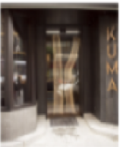
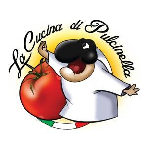
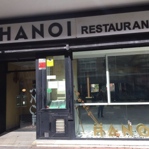

Aqui encontraras restaurantes de todo tipo que esten por la zona de Bilbao, Getxo y alrededores,
tambien podras consultar la carta, comprar y hacer pedidos a traves de la pagina web de cada local
|
Euskopapa Juan de Urbieta Kalea, 48015
+34946074353 |
Restaurante Kuma  Ercilla Kalea, 8, 48009
+34677483348 |
Restaurante Italiano Pulcinella Reina María Cristina Kalea, 3, 48930
+34944315767 |
Hanoi Restaurante Ibaigane Kalea, 3, 48930
+34944635830 |